Ackermann Steering System
The Problem
When a car turns, the inner and outer wheels trace arcs of different radii. Parallel steering makes the outer tire scrub sideways. Ackermann geometry fixes this — but for a solar race car operating at both low and high speeds, the question is how much Ackermann. Full Ackermann minimizes scrub at low speed; partial distributes lateral load better at speed. Task: run the trade study, pick the number, build it.
Geometry & Iteration
I drew construction lines in SolidWorks from the rear axle centerpoint through each kingpin axis — tie rod endpoints have to fall on those lines to produce true Ackermann behavior. Then iterated tie rod positions, each producing a different Ackermann percentage, until the scrub vs. load tradeoff landed at 21.5° inner / 16.8° outer.
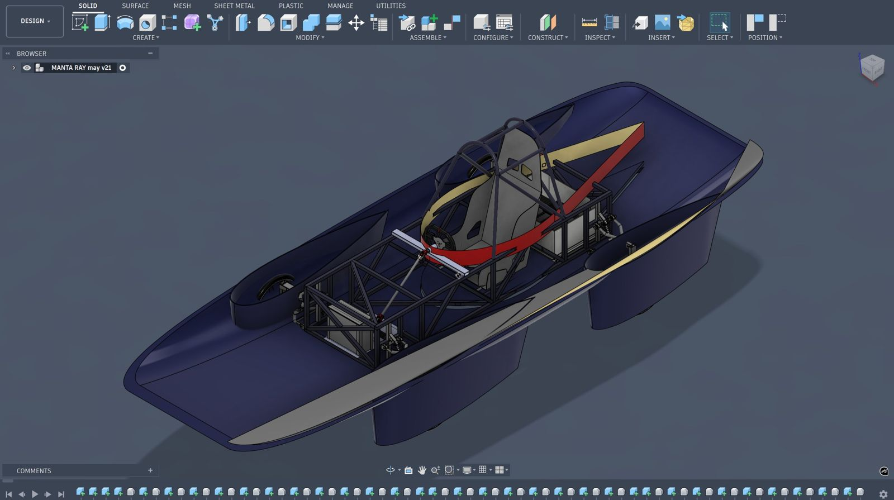
Kingpin Complication
The suspension team's kingpin geometry had a Z-axis rotation component — not purely the simplified Y-axis the initial analysis assumed. First-generation car, no prior precedent on the team. I made a documented assumption, proceeded, and built the part. The design is on the car. That's the test that matters.
A perfect model of a flawed input is still a flawed output. Make a defensible assumption, document it, build, and learn from the physical result.
FEA Validation
ANSYS static structural analysis under worst-case combined front kingpin loading — hard turn plus impact event simultaneously. 55,338 psi max von Mises. Design cleared.
design cleared under worst-case load
optimized partial Ackermann
cornering load balanced
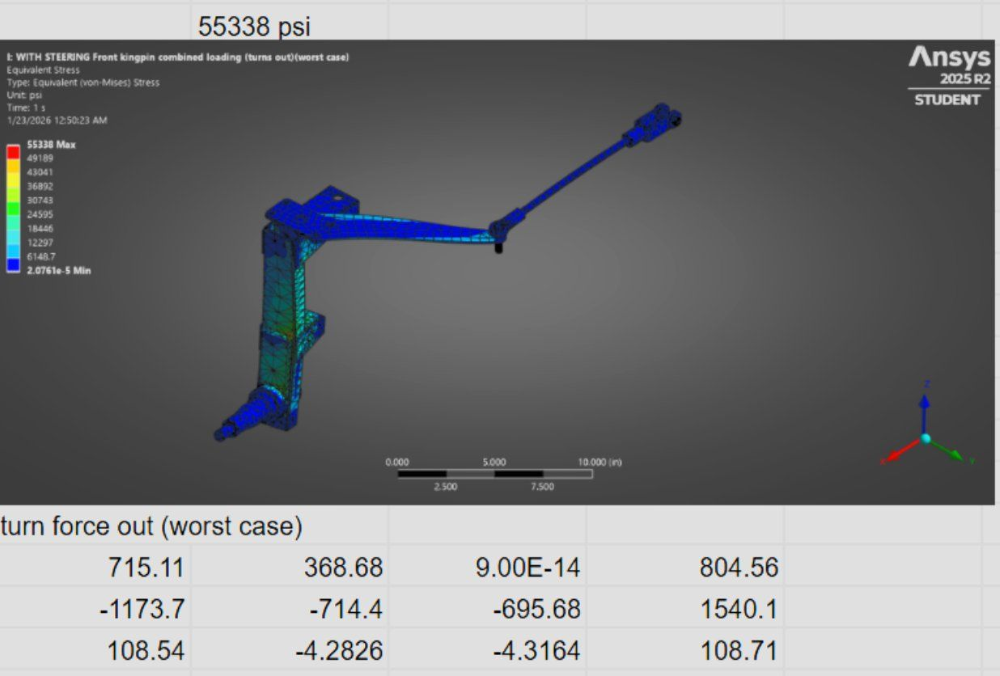
Fabrication
CNC wood prototypes first — fast and cheap to validate fit on the car before touching steel. Once geometry checked out, recut in steel plate. Tie rod endpoints are the critical tolerance: a few millimeters off changes the effective Ackermann percentage.
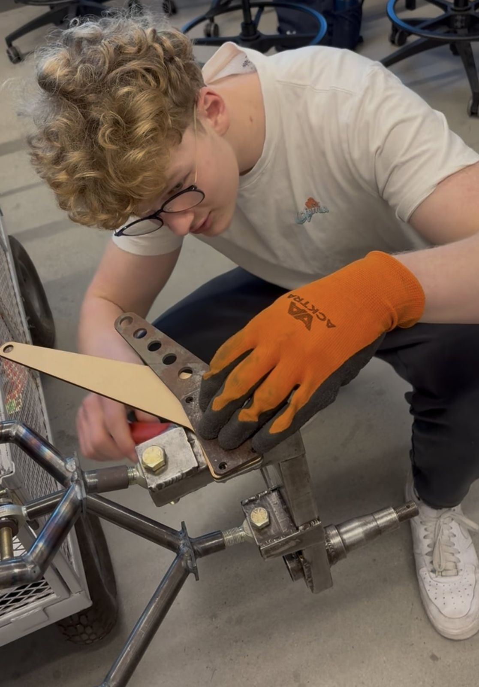
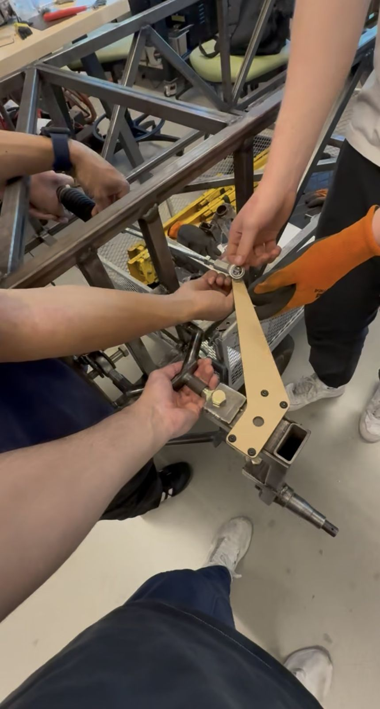


Steering Wheel Control Module
ASC regulations require all controls to rotate with the wheel — so the button module housing had to clip onto the module and turn with the column. The button module had an unusual elliptical profile, so I modelled it fully in CAD before printing anything.
Design Iteration: Complexity Is a Liability
First design was overengineered — solving problems I hadn't encountered yet. The redesign strips it to the functional core.
Never make something more complicated than it needs to be. Complexity is a liability, not a signal of effort.
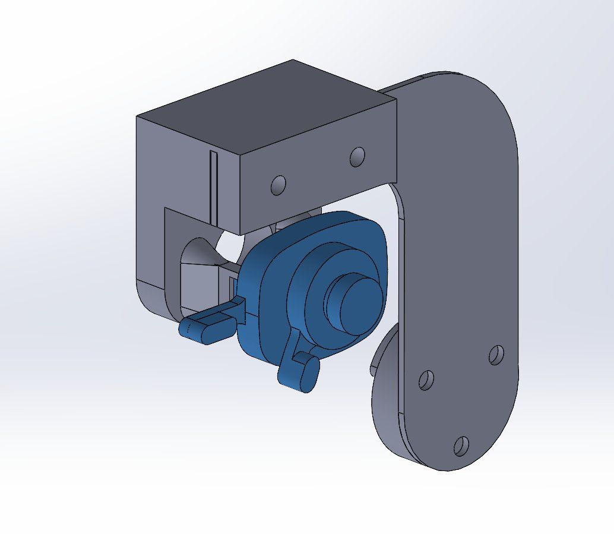
Tolerancing — When Calipers Aren't Enough
The usual rule is measure the physical part, not the spec sheet. Problem: several critical dimensions on the button module were geometrically inaccessible — recessed curves and internal features you can't reach with calipers no matter how you try. Iteration became the measurement tool.
Each print revealed something specific. Mounting holes oversized from shrinkage. Curved faces not seating flush. And a recurring structural issue: inner walls thin enough that the clips would snap off under the force needed to seat the module. The fix wasn't just dimensional — I started varying infill percentage and wall thickness until the part was stiff enough to survive assembly without the critical features breaking. Once the geometry and the print settings both landed right, the fit was tight and the part held.
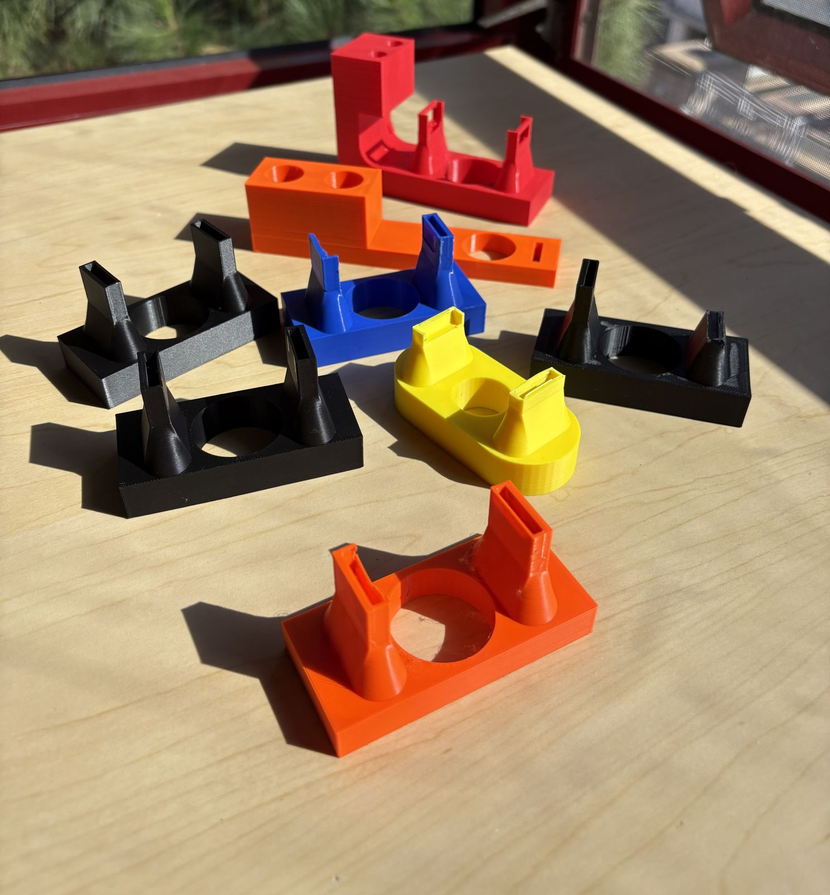
Final Design
Once the fit was right, I went ahead with the design.
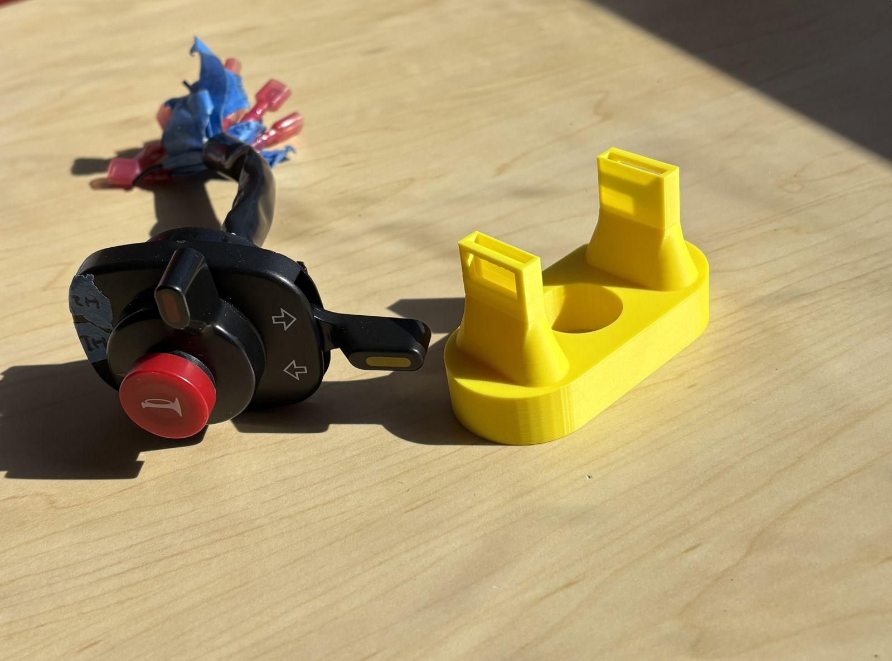
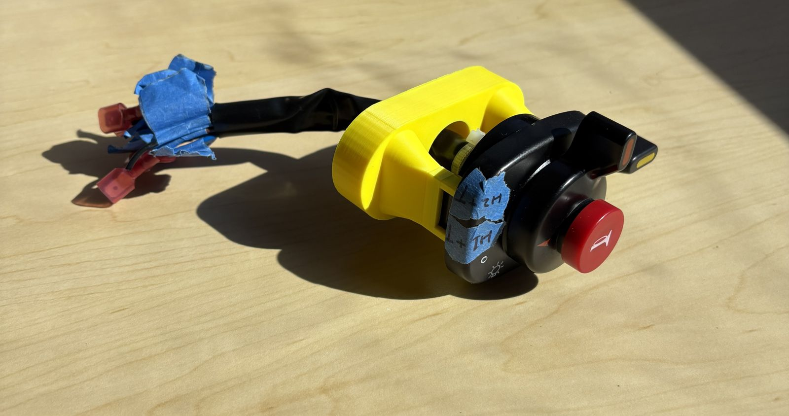
Backplate & Final Assembly
CNC-machined aluminum backplate, dimensioned against the SolidWorks reference. Module clips into holder, holder mounts to backplate, backplate bolts to wheel. On the car.
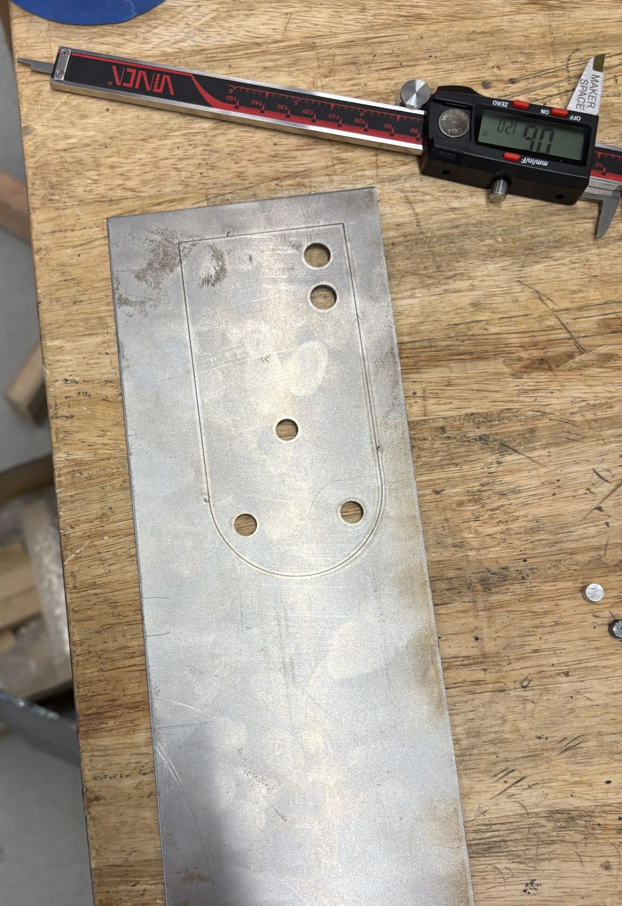
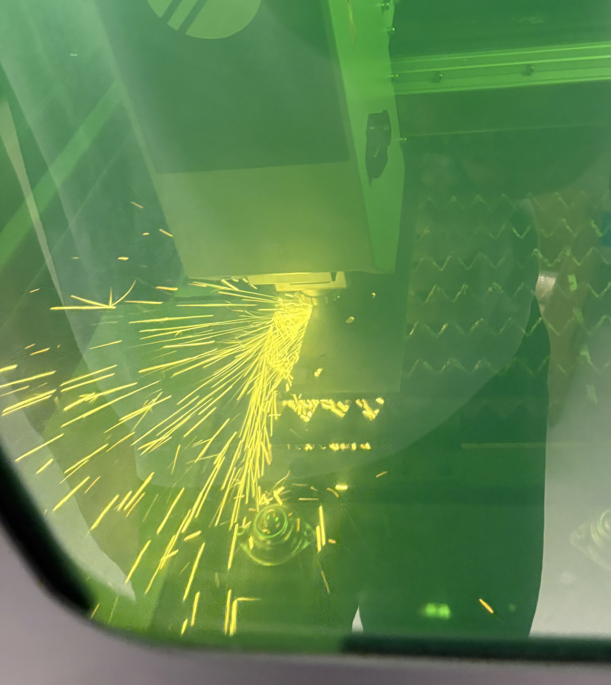
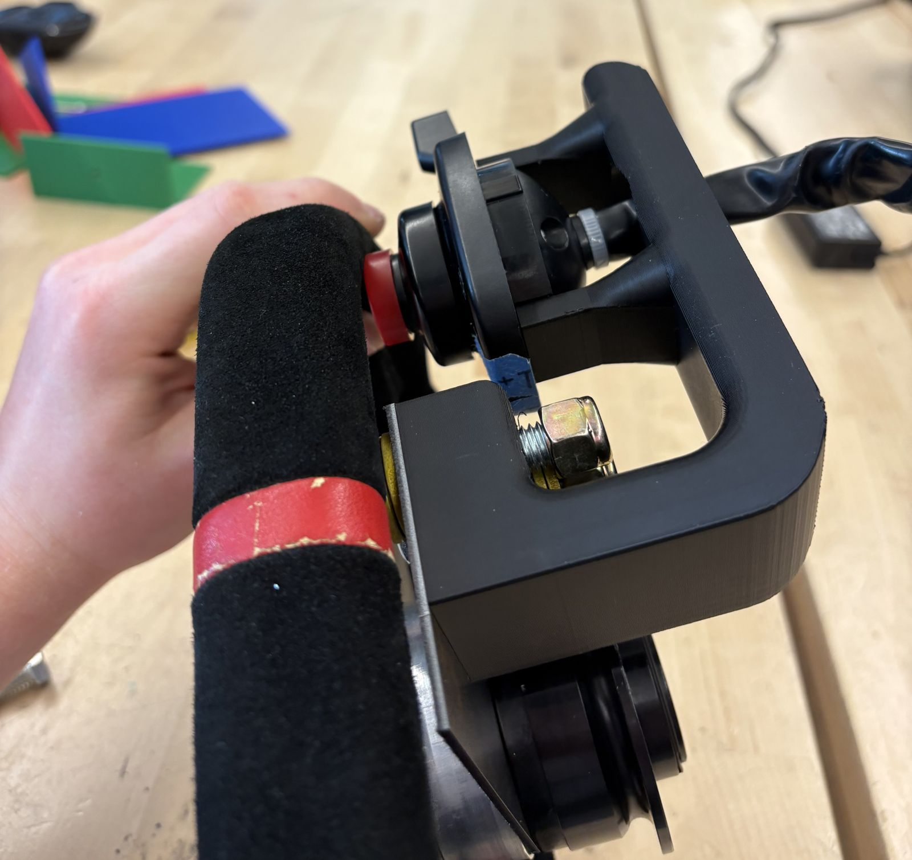
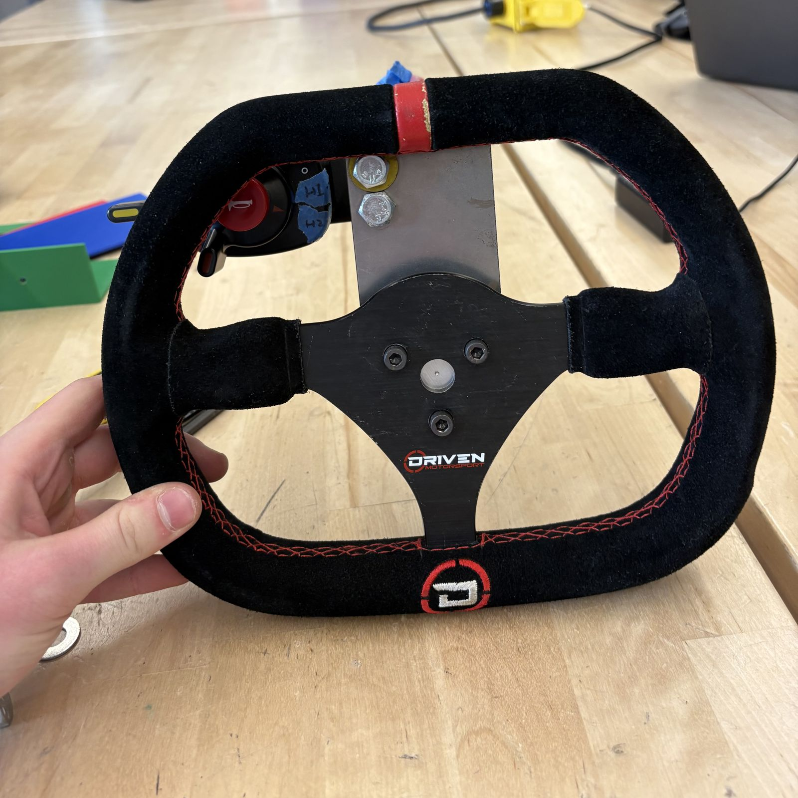